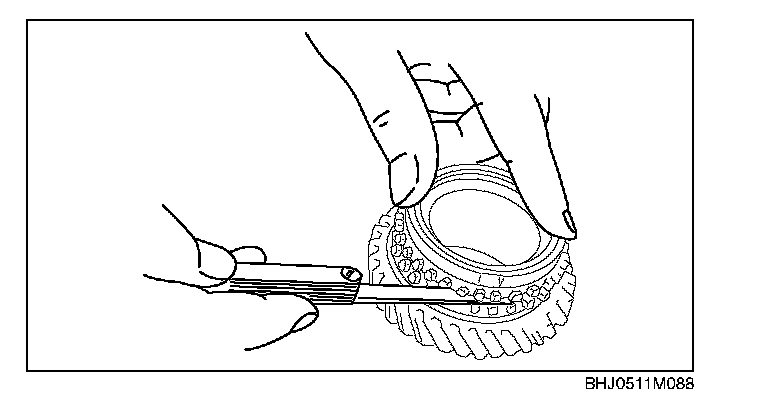

Synchronizer Ring (4TH, 5TH and Reverse) Inspection
Synchronizer Ring (4th, 5th and reverse) Inspection1. Inspect the following, and replace the synchronizer ring if necessary.
^ Individual synchronizer ring teeth for wear and cracks.
^ The tapered surface for wear and cracks.
2. Set the synchronizer ring squarely in the gear.

3. Measure the clearance between the synchronizer ring and flank surface of gear all around the circumference.
Clearance between the synchronizer ring (4th, 5th and reverse) and flank surface
Standard clearance: 1.5 mm (0.059 in)
Minimum: 0.8 mm (0.031 in)
^ If not as specified, replace the synchronizer ring.